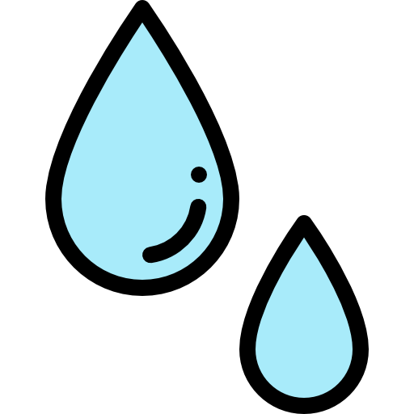

clique
A água é um recurso natural abundante essencial para a existência de vida na Terra.
O planeta Terra é constituído por uma extensa massa de água, correspondendo ao que conhecemos como hidrosfera.
Empresas de água em São Paulo:
clique
A eletricidade é uma forma de energia muito versátil, já que pode ser facilmente transformada em outras formas de energia, como luz, calor ou movimento.
Ela é usada em uma ampla variedade de casos, desde a iluminação e o funcionamento de eletrodomésticos até a alimentação de grandes indústrias e sistemas de transporte.
Empresas de luz em São Paulo: